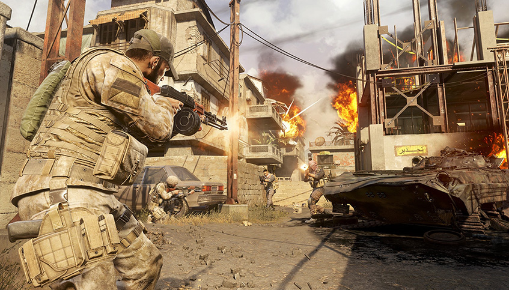

Requerimientos mínimos
- Procesador: Intel Core i3-4340 o AMD FX-6300
- Memoria RAM: 8 GB
- Gráficos: NVIDIA GeForce GTX 670 / GTX 1650 o Radeon HD 7950
- Almacenamiento: 175 GB disponibles
- Sistema operativo: Windows 10 de 64 bits
Universidad: Universidad Autónoma de Entre Ríos
Facultad: Facultad de Ciencia y Tecnología
Carrera: Licenciatura en Sistemas de Información
Cátedra: Fundamentos de Computación
Trabajo Práctico: N°1 - Streaming de videojuegos
Profesores: Bioing. Ismael Cassi, Lic. Paolo Orundés Cardinali
Integrantes: Mateo Raviol,Matias Ferreyra, Exequiel Agustin David, Juan ignacio Passarino
Comisión: 2
Fecha de entrega: 26/09
Año lectivo: 2025
Call of Duty: Modern Warfare
Call of Duty: Modern Warfare es un videojuego de disparos en primera persona (FPS) desarrollado por Infinity Ward y publicado por Activision.
Incluye modos de juego campaña, multijugador competitivo y cooperativo. Es uno de los títulos más populares de la saga, muy jugado y transmitido en plataformas como Twitch y YouTube Gaming.

